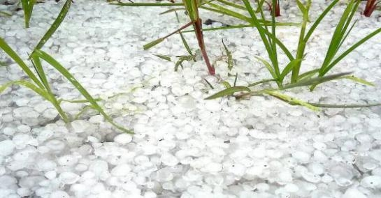

苹 謌风起于青苹之末， 狂来放謌自谴乐。
邅 途
2015-09-19
风尘仆仆人生路，
品甜尝辣含酸苦。
侧身凭栏看斜阳，
相知遥遥在邅途。
舟平謌
2015-09-19
长空万里蹑鹏程，
轻舟行水平如镜。
任从风卷滔滔浪，
青苹放謌声声情。
秋雨情
2015-09-16
滴滴秋雨声，
绵绵睡意沉。
晨起远望外，
蒙蒙隔轩清。
（2015.09.16 早晨起来，见窗外蒙蒙细雨，听小提琴演奏曲《下雨的时候》之随想）
耋之约
2015-08-28
惜行川南酒都城， 举杯把盏话人生。
生命苦短皆滋味， 悠悠岁月俱风尘。
笑看流年似若影， 耄耋之年来相庆。
吾生八十君祝寿， 耋至丽君将酒敬。
（2015.08.28 苹謌在宜宾与杨丽相约 80 岁时互祝寿，并于 9 月 1 日作诗为证)
雹 灾
2015-07-16
洪水虐初愈， 突降冰雹雨。
铺天盖地来， 蚕豆大小粒。
遍地白皑皑， 六月飞雪泣。
持续半小时， 疯狂无人敌。
行车尚可驻， 可怜禾苗孤。
家乡多灾难， 预防齐努力。
自救应对袭， 行人急躲避。
临危当机智， 抗灾难关依。
（2015.07.16 17:30 分，旺苍县突降蚕豆大小冰雹雨，铺天盖地持续下了约半小时，罕见天灾）

洪 虐
2015-06-28
昨夜雷雨通宵响， 旺苍东河洪水涨。
今日雨大似滂沱， 河水滔滔翻滚狂。
山洪咆哮齐奔涌， 卅年难遇真凶猛。
城里进水忙两岸， 感同家乡共抗洪。
（2015.6.28 旺苍县城及沿河乡镇街道遭受洪水侵袭， 老城红军城、新城滨江路等地段被洪水淹没)

姣骄子
2015-06-12
婀娜多姿好飒爽，
你我齐心笑骄阳。
艰苦卓绝真巾帼，
移动儿女多优扬。
（2015.06.12 赞移动客服经理团队）
感 缘
2015-05-15
百年修渡千年缘，
相遇容易相聚难。
若是相思有感时，
何苦思念到情怨。
（2015.05.15 星期五 7000 年一遇的缘）
朝海情
2015-03-28
朝晖映丽影，
海风拂面亲。
眺望燕飞来，
叠浪层层情。
桃花胭
2015-03-23
桃花村外桃花艳，
春风细细覩飞燕。
花香鸟语闹春意，
桃花仙子来争妍。
页数 3 / 3